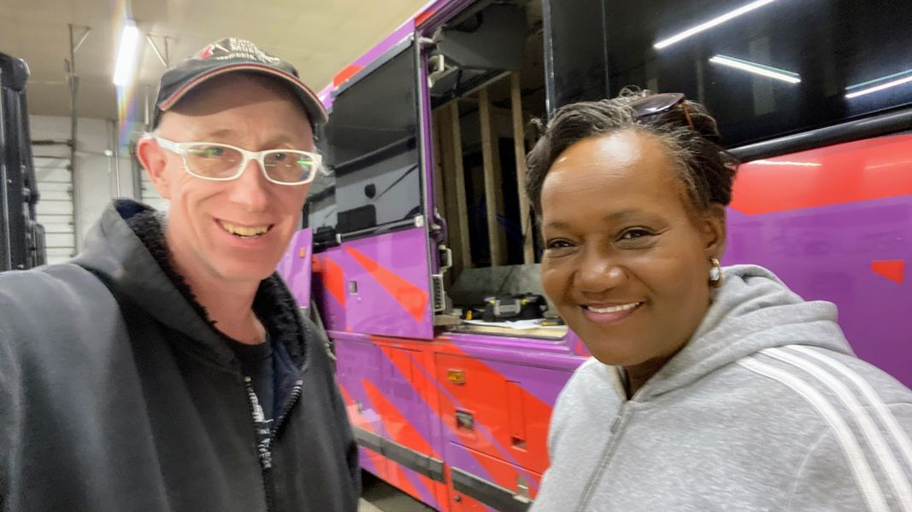

Timeline photos
I got to meet with Pastor Lori Porter from @[100064900328172:2048:Forever R Children].
They are coordinating the new shower bus that is coming to Akron.
I am 100% fully in support of this shower bus. That's because this project has brought together so many different groups. It's innovative, creative and uniting.
Projects like this shower bus are important because they spark hope and optimism for the future of homeless people in Akron Ohio. And that hope and optimism becomes a driving force for ALL of Akron's people.
I've toured this bus and it is amazing! It will have 2 showers and toilets. It will carry its own water and disposal system. The city is providing free sewer and water for the bus.
They have raised over $30,000 for the bus retrofit. They have about $60,000 to go.
This is how I believe the project will get completed... Many people will make small donations. And a few people will make large donations.
$60,000 may seem like a big number. But I assure you, it is a very small hurdle to overcome when we all work together.
This bus is important for Akron right now.
As our new mayor @[739631612:2048:Shammas Malik] gets ready lead our city, we must show him that we are ready for new ideas and new strategies to take Akron in a new and exciting direction.
I have a goal of getting 6 tiny houses for homeless people in Akron by the end of his first term.
Making this bus happen will show him that we are a community that cares for ALL Akronites. No one gets left behind.
Please make a donation (even $1) to this bus. It sends a message of hope and optimism. We MUST get this bus funded. It represents so much more than just a couple mobile showers.
Thank you for everything you do for the homeless community. I love you so much.
Please donate here:
https://www.gofundme.com/f/frc-shower-bus-a-caravan-of-love